A Step-by-Step Tutorial with Video Embedding
Place your square origami paper flat on the table. If it has a colored side, place the colored side facing down.
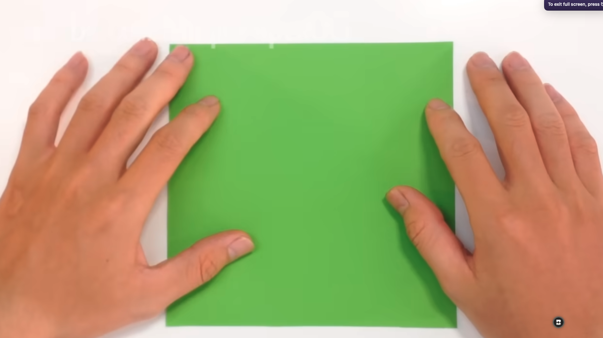
Fold the paper in half from left to right, crease it well, and then unfold it back to the start.
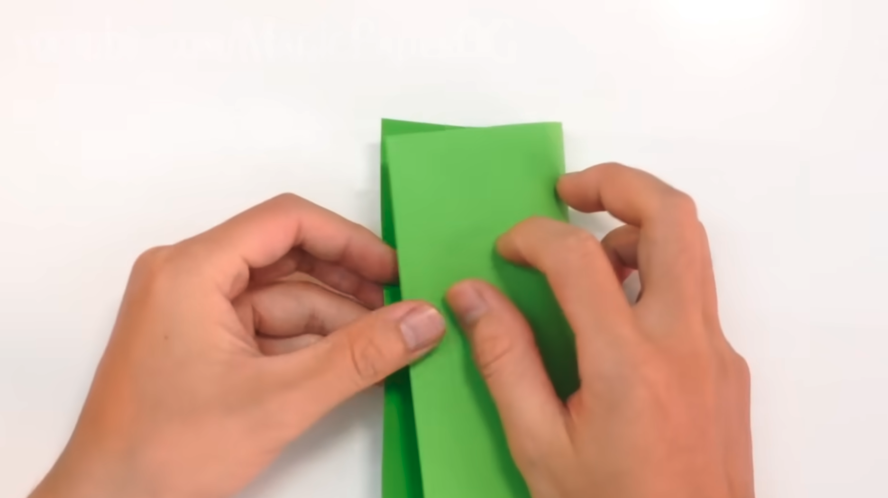
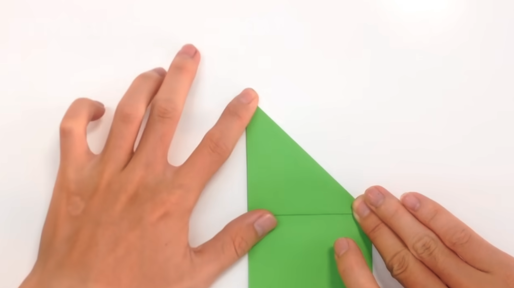
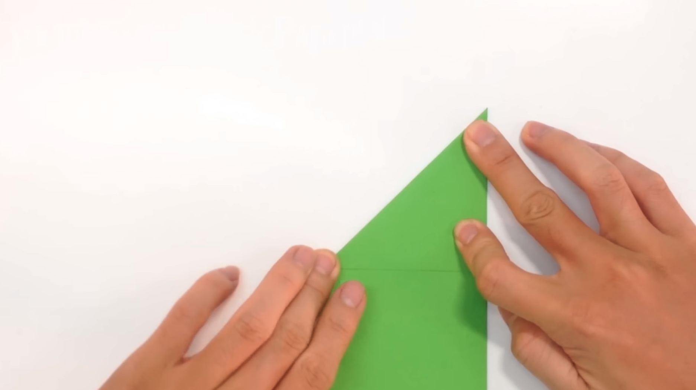
Push the sides of the "X" creases inward toward each other, collapsing the top section down into a neat triangle shape.
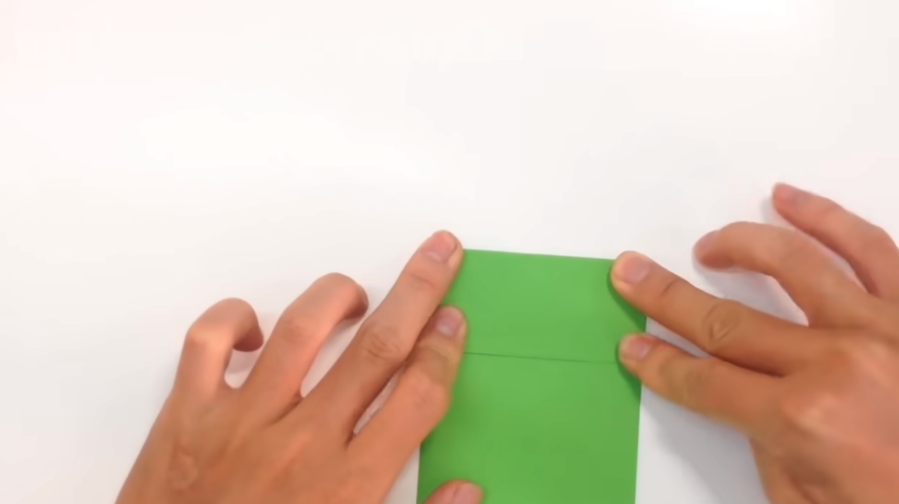
Fold the two points of the triangle upward to form the front legs of the frog.
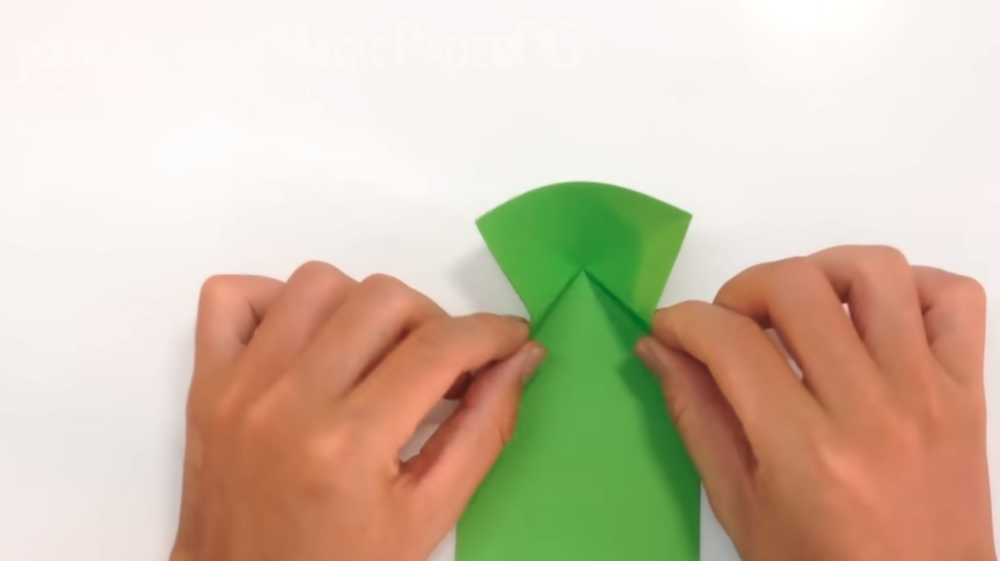
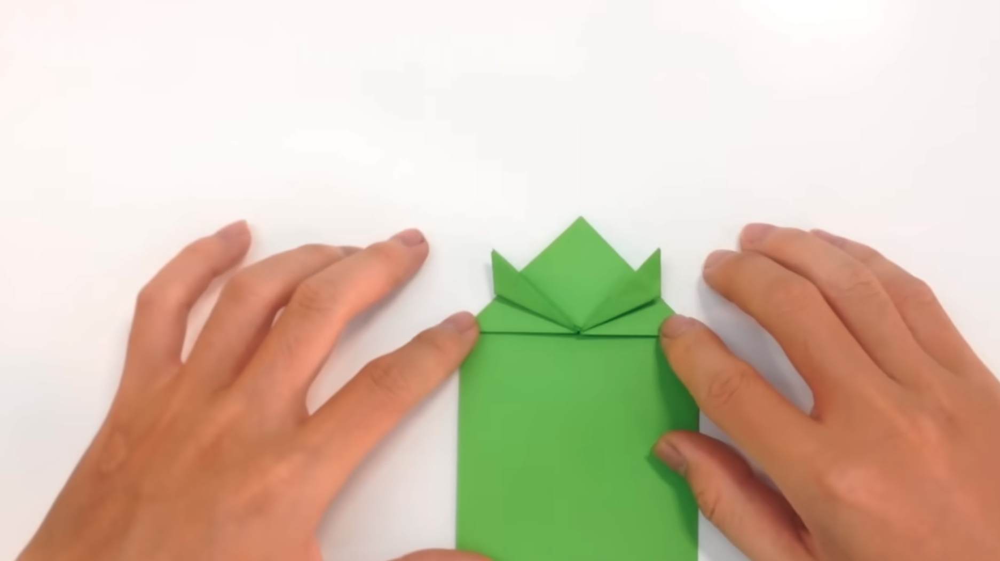
Fold the entire bottom edge of the paper upward so it touches the bottom of the triangle legs.
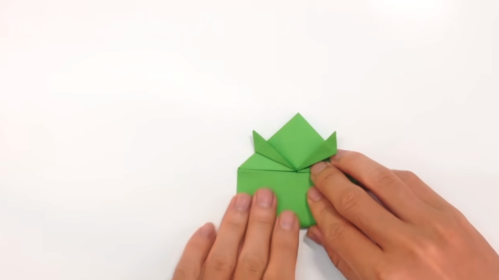
On that same bottom flap, fold the left and right side into the frog center.
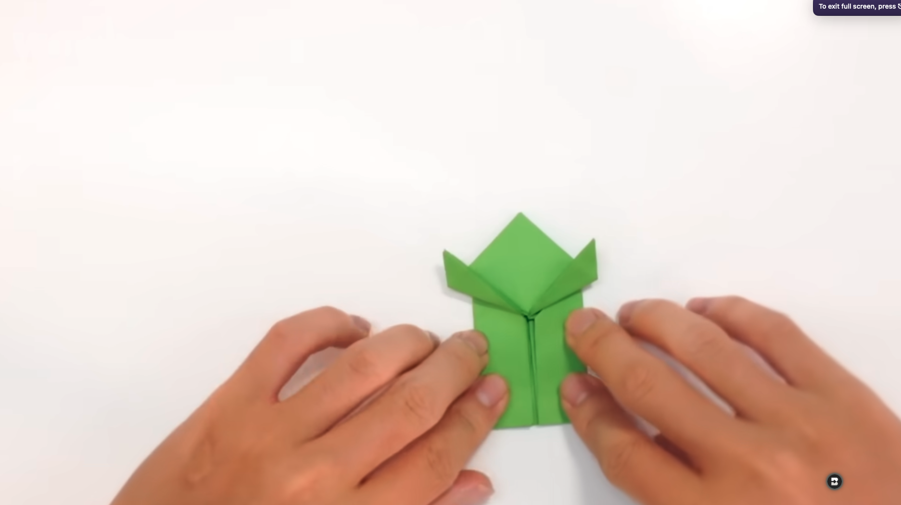
Pull the inner points down and outward to form the shape of the back legs, flattening the creases securely.
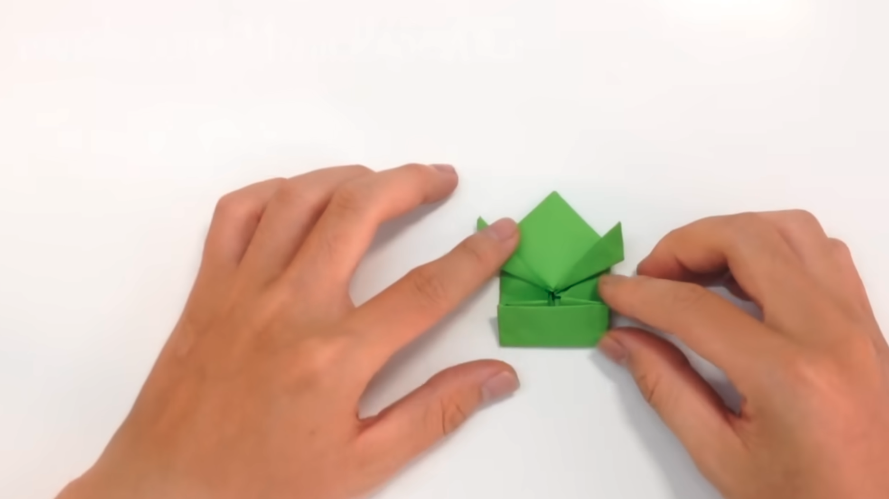
Fold the back legs outward slightly at an angle so they look like realistic, jumping hind legs.
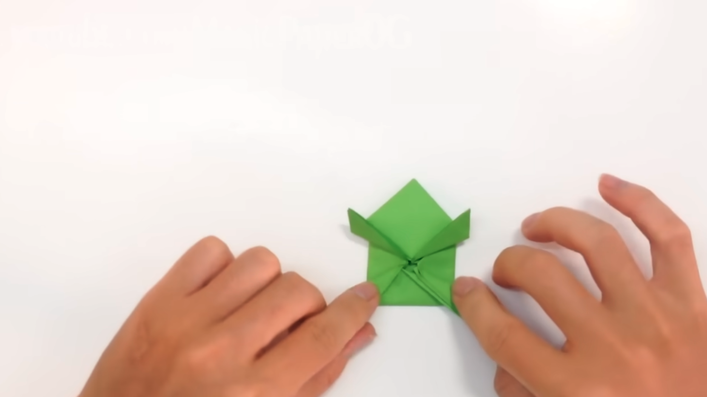
Fold the entire bottom half of the frog's body upward right along its waist line.
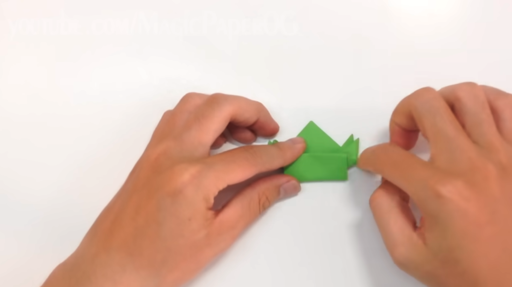
You can now play with your jumping frog!
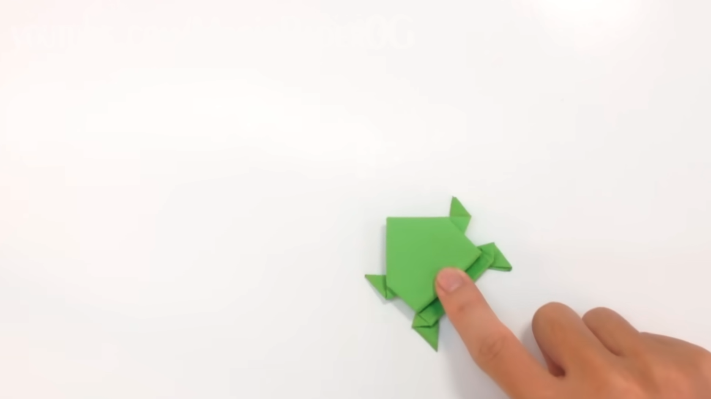
If you prefer a live demonstration, you can follow along with the video embedded below: